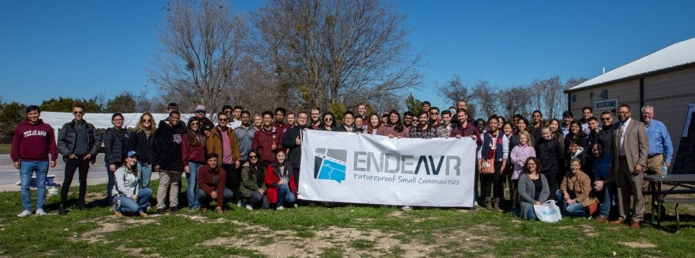

As I have mentioned on then homepage and qualifications page, I am currently a Software Engineering Intern at ENDEAVR Institute, but I have yet to mention the fact that this company is a 501(c)(3) non-profit organization! I work for free and have the privilege of contributing to ENDEAVR's selfless mission of bringing technology to small cities in Texas.

With the current project I am working on, ENDEAVR plans to employ an autonomous driving rideshare service to the people of Nolanville, TX, a small town with around 5,000 residents. Nolanville is near a military base and is home to many veterans and elderly people without the ability to drive. Unfortunately there is little to no public transportation in Nolanville and not enough people for apps like Uber and Lyft to be an effective solution. ENDEAVR is not just committed to public transportation, but also many other smart city attributes that would transform and improve the infrastructure of Nolanville as a whole!